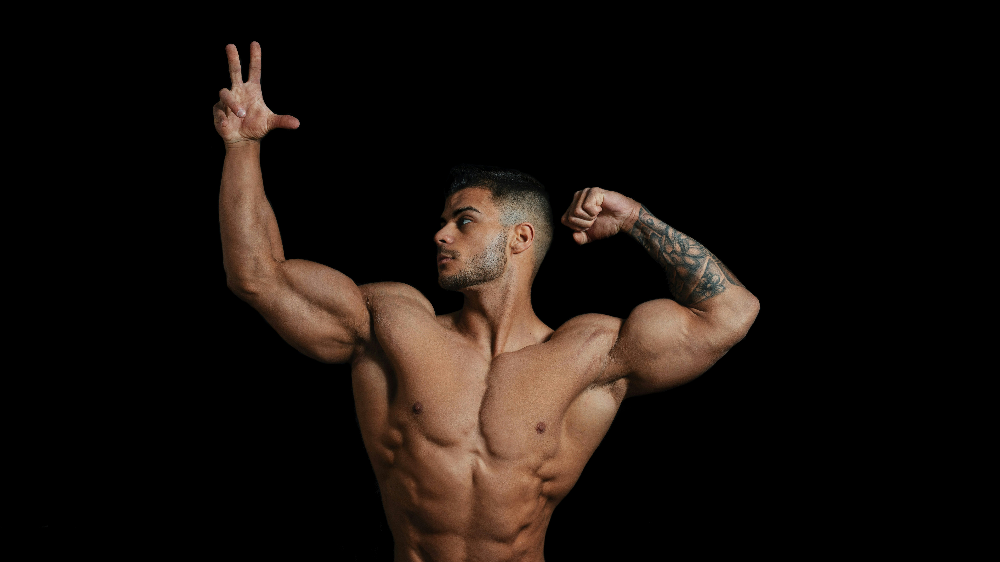

.jpg)
BENEFITS OF BODYBUILDER
Bodybuilding offers a wide range of physical, mental, and emotional benefits that contribute to
overall health and well-being. Here are some of the key benefits of bodybuilding:
1.Increased Muscle Mass and Strength: Bodybuilding is designed to stimulate
muscle
growth and
development through resistance training. By consistently challenging the muscles with progressively
heavier weights, bodybuilders can increase muscle size, strength, and power. Improved muscle mass
and strength not only enhance physical performance but also support daily activities, improve
functional capacity, and reduce the risk of age-related muscle loss.
2.Improved Body Composition: Bodybuilding promotes favorable changes in
body composition
by
reducing body fat levels and increasing muscle mass. By combining resistance training with proper
nutrition and cardiovascular exercise, bodybuilders can achieve a leaner, more defined physique with
lower body fat percentages. Improved body composition not only enhances aesthetic appearance but
also contributes to overall health, metabolic function, and disease prevention.
3.Enhanced Physical Health:Engaging in regular exercise, such as bodybuilding,
offers numerous physical health benefits, including improved cardiovascular health, blood pressure
regulation, and
insulin sensitivity. Resistance training strengthens bones, joints, and connective tissues, reducing
the risk of osteoporosis, arthritis, and injury. Additionally, bodybuilding supports metabolic
health, weight management, and immune function, promoting longevity and vitality.
4.Increased Metabolic Rate:Muscle tissue is metabolically active, meaning it
burns
calories
even at rest. By increasing muscle mass through bodybuilding, individuals can boost their metabolic
rate and energy expenditure, making it easier to achieve and maintain a healthy body weight. A
higher metabolic rate also facilitates fat loss, improves insulin sensitivity, and enhances overall
metabolic health.
.jpg)
HOW BODYBUILDING WORKS
Bodybuilding works by utilizing resistance training, nutrition, and recovery strategies to stimulate
muscle growth, improve strength, and enhance physique aesthetics. Here's a breakdown of how
bodybuilding works:
1.Resistance Training: At the core of bodybuilding is resistance training, which
involves lifting weights or performing bodyweight exercises to challenge the muscles. By subjecting
the muscles to resistance, such as lifting weights, the muscle fibers undergo microscopic damage,
prompting the body to repair and rebuild them stronger and larger during the recovery process.
Bodybuilders typically follow structured training programs that target specific muscle groups with a
variety of exercises, sets, and repetitions to promote muscle hypertrophy and overall muscular
development.
2.Progressive Overload: Progressive overload is a fundamental principle of
bodybuilding
that involves gradually increasing the intensity, volume, or complexity of workouts to continually
challenge the muscles and stimulate growth. This can be achieved by progressively increasing the
weight lifted, performing more repetitions or sets, reducing rest periods, or incorporating advanced
training techniques such as drop sets, supersets, or pyramid sets. Progressive overload ensures that
the muscles are continuously adapting to new stimuli, leading to ongoing gains in strength and
muscle size over time.
3.Nutrition: Proper nutrition is essential for supporting muscle growth, repair,
and
recovery in bodybuilding. Bodybuilders typically follow structured meal plans that emphasize
high-quality protein sources to provide the building blocks for muscle repair and synthesis.
Carbohydrates are consumed to fuel workouts and replenish glycogen stores, while healthy fats,
vitamins, and minerals support overall health and optimal muscle function. Caloric intake is
adjusted based on individual goals, metabolism, and training intensity to ensure adequate energy
availability for muscle growth and performance.
4.Recovery: Recovery is a critical component of bodybuilding that allows the
body to
repair damaged muscle tissue, replenish energy stores, and adapt to training stimuli. Adequate rest,
sleep, and recovery strategies such as foam rolling, stretching, and massage help minimize muscle
soreness, reduce the risk of injury, and optimize recovery between workouts. Bodybuilders may also
incorporate active recovery activities such as light cardio or mobility exercises to enhance
circulation, promote relaxation, and facilitate recovery.
By combining resistance training, progressive overload, proper nutrition, and effective recovery
strategies, bodybuilders can stimulate muscle growth, improve strength, and achieve their desired
physique goals. Consistency, dedication, and adherence to sound training principles are key to
success in bodybuilding, allowing individuals to continuously progress and evolve their physique
over time. What object to Avoid in Self-defense

EMOTIONAL EFFECTS OF BODYBUILDING
Bodybuilding can have profound emotional effects on individuals, influencing self-esteem,
confidence, mood, and overall well-being. Here's how bodybuilding impacts emotions:
1.Increased Self-Esteem and Confidence: Bodybuilding empowers individuals to
take control of their physical health and appearance, leading to increased self-esteem and
confidence. As bodybuilders see improvements in muscle size, definition, and overall physique, they
often experience a boost in self-confidence and a greater sense of self-worth. Achieving fitness
goals and overcoming challenges in the gym can instill a sense of accomplishment and pride,
enhancing overall emotional well-being.
2.Stress Relief and Mood Enhancement: Engaging in regular exercise, such as
bodybuilding, has been shown to reduce stress, anxiety, and symptoms of depression. Physical
activity stimulates the release of endorphins, neurotransmitters that promote feelings of happiness
and well-being, leading to improved mood and emotional resilience. Bodybuilders often use workouts
as a form of stress relief, channeling negative emotions into productive training sessions that
leave them feeling energized, refreshed, and more emotionally balanced.
3.Outlet for Expression and Creativity: Bodybuilding provides a creative outlet
for self-expression, allowing individuals to sculpt their bodies according to their aesthetic
preferences and personal goals. From choosing specific training programs and nutrition plans to
designing posing routines and selecting competition attire, bodybuilders have the opportunity to
express their individuality and creativity in various aspects of the sport. This creative freedom
fosters a sense of ownership and identity, contributing to emotional fulfillment and satisfaction.
4.Body Image and Identity: While bodybuilding can promote positive body image
and self-acceptance, it can also exacerbate negative body image issues and contribute to body
dysmorphia in some individuals. The pursuit of an idealized physique and comparison to others in the
bodybuilding community can lead to unrealistic expectations, dissatisfaction with one's appearance,
and negative self-talk. It's essential for bodybuilders to cultivate a healthy relationship with
their bodies, focusing on self-improvement, progress, and overall health rather than unrealistic
standards of perfection.
In summary, bodybuilding can have significant emotional effects, including increased self-esteem,
confidence, stress relief, and a sense of accomplishment. By fostering positive emotions, promoting
social connections, and providing a creative outlet for self-expression, bodybuilding contributes to
overall emotional well-being and resilience in individuals pursuing their fitness goals. However,
it's important for bodybuilders to be mindful of their emotional health, seek support when needed,
and maintain a balanced perspective on body image and identity within the sport.
More on Bodybuiders